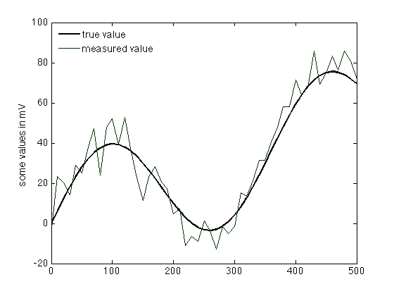
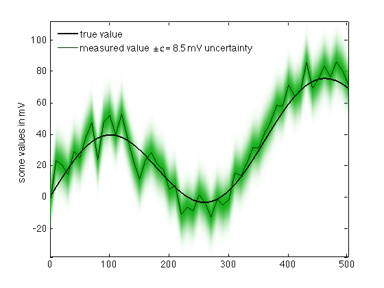
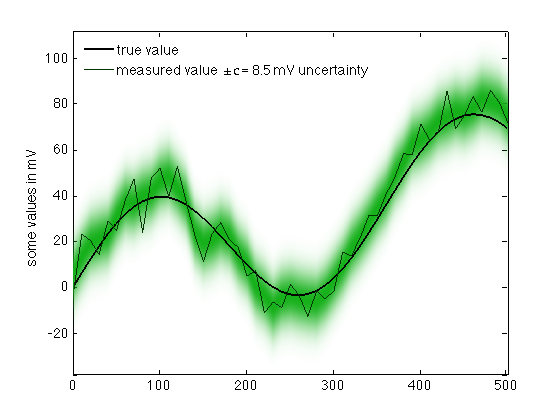

errorshade documentation
The errorshade function plots a shaded region to indicate gaussian uncertainty. This function works by generating an RGB image of a specified color, and setting transparency of the RGB image corresponding to uncertainty values.
Contents
Syntax
errorshade(x,y,sigma,color) errorshade(...,'resolution',res) errorshade(...,'average',N) h = errorshade(...)
Description
errorshade(x,y,sigma,color) plots a gaussian shaded region centered about the line given by x,y. The input sigma represents one standard deviation of shading weight, and color is a three-element vector containing rgb values of the shading color.
errorshade(...,'resolution',res) specifies resolution of the underlying RGB image. res can be a scalar value or a two-element vector in the form [xres yres]. Default resolution is 2500 pixels. Larger values may take longer to plot, smaller values may appear jittery.
errorshade(...,'average',N) specifies an N point moving average to smooth out local spikes in data. Use an odd-numbered integer value because even numbers will result in a slight offset on the horizontal direction. The averaging option requires the Image Processing
h = errorshade(...) returns a handle h of the plotted RGB image.
Example
This example assumes you have some true value of a quantity, say in units of mV, and you have a noisy measurement of the true value. You know your sensor noise is characterized by +/- 8.5 mV uncertainty. Here's the data:
x = 0:10:500; y_true = 30*sind(x) + x/10; sigma = 8.5; y_measured = y_true + sigma*randn(size(x));
Here's a simple plot of the true and measured values. Below I used my rgb function (also available on File Exchange) to find that the rgb values of dark green are [0.0118 0.2078 0].
figure plot(x,y_true,'k','linewidth',2) hold on plot(x,y_measured,'color',[0.0118 0.2078 0]) ylabel 'some values in mV' legend('true value','measured value','location','northwest') legend boxoff
But that plot lacks any depiction of uncertainty. It's common to fill in the +/- 1 sigma region with a solid color to represent uncertainty, but if you prefer a little more nuance, here's some shading that's proportional to the actual uncertainty:
h=errorshade(x,y_measured,sigma,[0.0824 0.6902 0.1020]); legend('true value','measured value \pm\sigma = 8.5 mV uncertainty','location','northwest') legend boxoff axis tight
In some cases you may want less noisy-looking uncertainty. If that's the case, try shading a moving average. You can specify the length over which the moving average is specified like this, here I'm specifying a 3-point moving average. Also, above I used the h=errorshade(...) syntax in antipation of deleting the old errorshade now:
delete(h)
errorshade(x,y_measured,sigma,[0.0824 0.6902 0.1020],'average',3);
 Author Info:
This function was written by Chad A. Greene of the University of Texas Institute for Geophysics, July 2016. Updated July 27, 2016 thanks to a suggestion from Oleg Komarov.